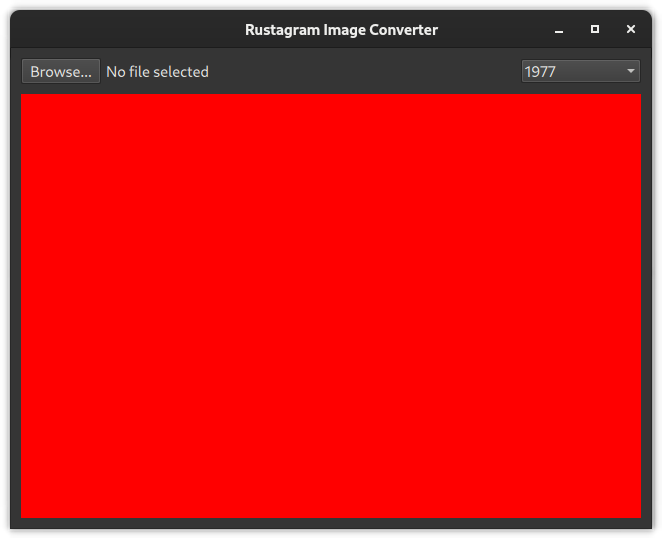

Creating the QML GUI
The goal of this part is to add a QML GUI for our application. For now, we can leave out loading an actual file. You can just use a rectangle as a placeholder for now.
In the end it should look similar to this: 
The red rectangle serves as a placeholder for our filtered image.
✅ Add the control elements to qml/main.qml
You can use Qt Quick Controls 2 for this. The list of available QML types is listed in the Qt documentation.
The controls should include:
- ✅ A
Buttonto browse files - ✅ A
Labelshowing the currently selected file. - ✅ A
ComboBoxthat should include:
"1977",
"nineteenseventyseven",
"aden",
"brannan",
"brooklyn",
"clarendon",
"earlybird",
"gingham",
"hudson",
"inkwell",
"kelvin",
"lark",
"lofi",
"maven",
"mayfair",
"moon",
"nashville",
"reyes",
"rise",
"slumber",
"stinson",
"toaster",
"valencia",
"walden",
✅ Lay out the Control elements using layouts
✅ Add a Rectangle as a placeholder for our image converter
✅ Hook up the Browse... button to open a FileDialog.